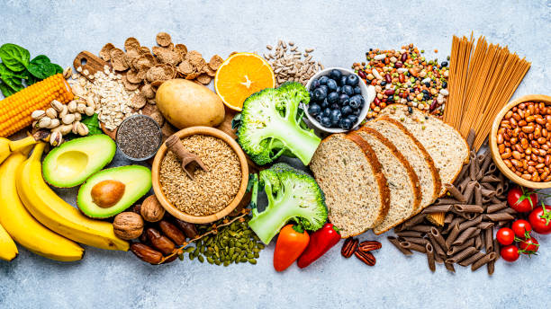
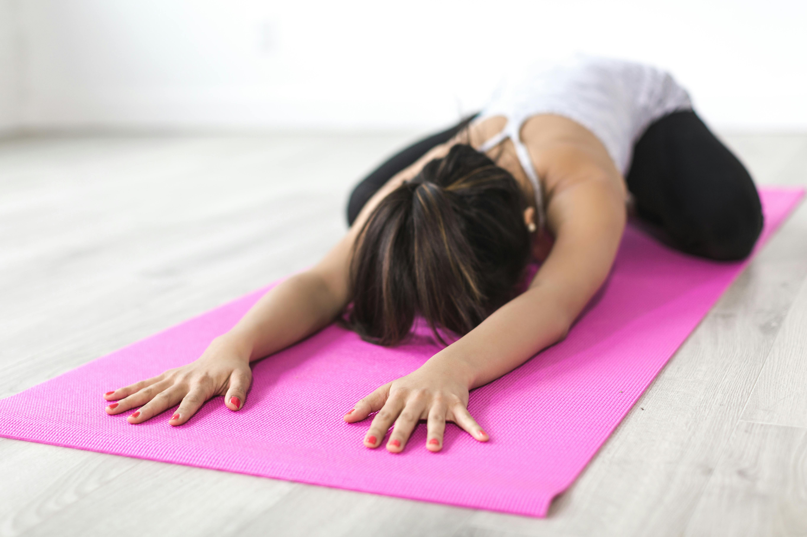

Movement
Wellness Journal
Movement, recovery, nourishment, and mindset — all in one place.

Nutrition
Eating More Cruciferous Vegetables Can Cut Colon Cancer Risk by 20%, Study Shows
Mindset
This Simple Habit You Already Love Can Melt Anxiety & Stress
Recovery
Hot Sleepers & People With Back Pain Agree That This Mattress Is A Game Changer

Habits
5 Expert-Backed Habits For Stress Resilience & Longevity
Movement